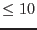

| Parameter | Mand | Type | Default | Constraints |
| eventsets | no | filename list | event.fits | |
| Blank-separated name(s) of input event files, from which images and
masks are extracted. Alternatively: name of an ASCII file preceeded
by '@', containing one file name per line
(cf. 3.4).
This parameter is mandatory, if you want to run all stages of the edetect_stack source detection. | ||||
| attitudesets | no | filename list | attitude.fits | |
| Blank-separated name(s) of input attitude files, from which the
common coordinate system of the stacked observations is derived. One
per observation identifier. Alternatively: name of an ASCII file
preceeded by '@', containing one file name per line
(cf. 3.4).
This parameter is mandatory, if you want to run all stages of the edetect_stack source detection. | ||||
| summarysets | no | filename list | summary.fits | |
| Blank-separated name(s) of input odf summary files, as provided
by odfingest. One per observation identifier. Alternatively:
name of an ASCII file preceeded by '@', containing one file name per
line
(cf. 3.4).
This parameter is mandatory, if you want to run all stages of the edetect_stack source detection. | ||||
| mlmin | no | float | 6.0 | [0.0 : 100.0] |
| emldetect: Minimum detection likelihood to be reached in total
or in at least one pointing to transfer a source from the
intermediate to the final output list. | ||||
| pimin | no | integer | 200 500 1000 2000 4500 | [0 : 30000] |
| Lower boundaries of energy bands in source detection. Units: eV | ||||
| pimax | no | integer | 500 1000 2000 4500 12000 | [0 : 30000] |
| Upper boundaries of energy bands in source detection. Units: eV | ||||
| ecf | no | float | 0.0 0.0 0.0 0.0 0.0 | [0.0 : 1000.0] |
| Energy conversion factors, given in units of counts
cm | ||||
| srclistset | no | filename | srclist.fits | |
| Name of output edetect_stack
source list | ||||
| minstage | no | string | 1 | [1 : 12] or stage name |
| Index or name of stage at which edetect_stack
should be
started. If set, it has priority over the "run*" parameters. | ||||
| maxstage | no | string | 12 | [1 : 12] or stage name |
| Index or name of stage at which edetect_stack
should be
stopped. If set, it has priority over the "run*" parameters. | ||||
| prefix | no | string | ||
| Prefix of all files for which the default name structure is used. | ||||
| informational | no | string | default|all|none | |
| Write / omit informational output: sensitivity maps, mosaic images
(default: yes), cheesed background images and masks, emldetect source
images (default: no). | ||||
| attcalc (stage 1) | ||||
| runattcalc | no | boolean | true | true|false |
| Run task attcalc
to establish a common coordinate system. If
set to ``false'', this has to be done manually before
starting edetect_stack. | ||||
| att_eventset | no | filename | events | |
| attcalc: 1. Base name of event lists written
by attcalc, expanded by edetect_stack
to <att_eventset><pointing ID><instrument>.fits,
or 2. a list of file names, or 3. name of an ASCII file preceeded by
'@', containing one file name per line
(cf. 3.4). Output
files, if runattcalc is set to ``true'' (default), input
files to the following tasks otherwise. | ||||
| with_att_nominalcoord | no | boolean | false | true|false |
| User input of parameters att_nominalra
and att_nominaldec. If ``false'': optimum values are derived
by edetect_stack
from the attitude files. | ||||
| att_nominalra | no | angle | 0.0 | [0.0 : 360.0] |
| attcalc: Celestial right ascension coordinate of central
reference point, if with_att_nominalcoord is set to ``true''
(default: ``false''). | ||||
| att_nominaldec | no | angle | 0.0 | [-90.0 : +90.0] |
| attcalc: Celestial declination coordinate of central reference
point, if with_att_nominalcoord is set to ``true''
(default: ``false''). | ||||
| with_att_imagesize | no | boolean | false | true|false |
| User input of parameter att_imagesize. If ``false'': optimum
value is derived by edetect_stack
from the attitude files. | ||||
| att_imagesize | no | angle | 0.36 | [0.0 : ] |
| attcalc: Image half-size in degrees, if
with_att_imagesize is set to ``true'' (default: ``false''). | ||||
| evselect (stage 2) | ||||
| runevselectimages | no | boolean | true | true|false |
| Run task evselect
to produce images. If set to ``false'', the
files have to be provided as input. | ||||
| ev_imageset | no | filename | iimage | |
| evselect: 1. Base name of image files, expanded
by edetect_stack
to <ev_imageset><pointing ID><instrument>_<E_low>_<E_high>.fits,
or 2. a list of file names, or 3. name of an ASCII file preceeded by
'@', containing one file name per line (cf. 3.4). Output files,
if runevselectimages is set to ``true'' (default), input
files to the following tasks otherwise. | ||||
| ev_xcolumn | no | string | X | column name |
| evselect: Name of column with spatial X coordinates for image
creation. | ||||
| ev_ycolumn | no | string | Y | column name |
| evselect: Name of column with spatial Y coordinates for image
creation. | ||||
| ev_ximagebinsize | no | real | 80.0 | >0 |
| evselect: Binning factor for the X axis in image creation. | ||||
| ev_yimagebinsize | no | real | 80.0 | >0 |
| evselect: Binning factor for the Y axis in image creation. | ||||
| ev_withxranges | no | boolean | false | true|false |
| evselect: Use the ev_ximagemin and ev_ximagemax
values for the X coordinate ranges for image creation. If true, the
parameter ranges are used; if false, the ranges are determined from
the data. | ||||
| ev_ximagemin | no | real | 1.0 | |
| evselect: If set, the lower limit of the X coordinate for
image creation. | ||||
| ev_ximagemax | no | real | 1.0 | |
| evselect: If set, the upper limit of the X coordinate for
image creation. | ||||
| ev_withyranges | no | boolean | false | true|false |
| evselect: Use the ev_yimagemin and ev_yimagemax
values for the Y coordinate ranges for image creation. If true, the
parameter ranges are used; if false, the ranges are determined from
the data. | ||||
| ev_yimagemin | no | real | 1.0 | |
| evselect: If set, the lower limit of the Y coordinate for
image creation. | ||||
| ev_yimagemax | no | real | 1.0 | |
| evselect: If set, the upper limit of the Y coordinate for
image creation. | ||||
| ev_withimagedatatype | no | boolean | true | true|false |
| evselect: Boolean to choose whether to use the value of
the ev_imagedatatype parameter to set the data type of the
output image; if the value is false then evselect
tries itself
to determine the best value for the image data type. Please
note: ``stand-alone'' evselect
sets this parameter to
``false'' by default, edetect_stack
to ``true''. | ||||
| ev_imagedatatype | no | string | Int32 | Int8|Int16|Int32|Real32|Real64 |
| Data type to use for the output image. If not set, evselect
decides for itself what data type to use. Please note:
``stand-alone'' evselect
sets this parameter to ``Real64'' by
default, edetect_stack
to ``Int32''. | ||||
| eexpmap (stage 3) | ||||
| runeexpmap | no | boolean | true | true|false |
| Run task eexpmap
to produce exposure maps. If set to ``false'', the
files have to be provided as input. | ||||
| eexp_expimageset | no | filename | expmap | |
| eexpmap: 1. Base name of unvignetted exposure image
files, expanded by edetect_stack
to <eexp_expimageset><pointing ID><instrument>_<E_low>_<E_high>.fits,
or 2. a list of file names, or 3. name of an ASCII file preceeded by
'@', containing one file name per line
(cf. 3.4). Output
files, if runeexpmap is set to ``true'' (default), input
files to the following tasks otherwise. | ||||
| eexp_attrebin | no | float | 2.0 | [0.0 : 60.0] |
| eexpmap: Positional accuracy of attitude rebinning in
arcseconds. Changes in the attitude less than eexp_attrebin are
ignored when rebinning the attitude data. Please note:
``stand-alone'' eexpmap
sets this parameter to 4.0
by default, edetect_stack
to 2.0. | ||||
| emask (stage 4) | ||||
| runemask | no | boolean | true | true|false |
| Run task emask
to produce detection masks. If set to
``false'', the files have to be provided as input. | ||||
| emask_detmaskset | no | filename | detmsk | |
| emask: 1. Base name of detection mask files, expanded
by edetect_stack
to <emask_detmaskset><pointing ID><instrument>.fits,
or 2. a list of file names, or 3. name of an ASCII file preceeded by
'@', containing one file name per line
(cf. 3.4). Output
files, if runemask is set to ``true'' (default), input files
to the following tasks otherwise. | ||||
| emask_threshold1 | no | float | 0.5 | [0.0 : 1.0] |
| emask: Threshold parameter 1: fraction of maximum
exposure. Please note: ``stand-alone'' eexpmap
sets
this parameter to 0.3 by default, edetect_stack
to 0.5. | ||||
| emask_threshold2 | no | float | 1.0 | [0.0 : 10.0] |
| emask: Threshold parameter 2: threshold for gradient of
exposure. Please note: ``stand-alone'' emask
sets this
parameter to 0.5 by default, edetect_stack
to 1.0. | ||||
| emask_withregionset | no | boolean | false | true|false |
| emask: Read a FITS region file and exclude circular/box
regions from the mask. | ||||
| emask_regionset | no | filename | emask.fits | |
| emask: Name of the FITS region file providing the regions
to be excluded, if emask_withregionset is set to true. | ||||
| eboxdetect (local mode) (stage 5) | ||||
| runeboxdetectlocal | no | boolean | true | true|false |
| Run task eboxdetect
to produce local-mode input source lists
per observation. If set to ``false'', the files have to be provided as
input. | ||||
| eboxl_boxlistset | no | filename | eboxlocal.fits | loclst |
| eboxdetect: 1. Base name of local-mode box list files, expanded
by edetect_stack
to <ev_imageset><pointing ID>.fits,
or 2. a list of file names, or 3. name of an ASCII file preceeded by
'@', containing one file name per line (cf. 3.4). Output files, if runeboxdetectlocal
is set to ``true'' (default), input files to the following tasks
otherwise. | ||||
| eboxl_likemin | no | float | 5.0 | [1.0 : 50.0] |
| eboxdetect: Minimum detection likelihood for including a
source in the output list. Please note:
``stand-alone'' eboxdetect
sets this parameter to 10.0 by
default, edetect_stack
to 5.0. | ||||
| eboxl_boxsize | no | integer | 5 | 3|5 |
| eboxdetect: Size of detection box (3x3 or 5x5 pixels). | ||||
| eboxl_nruns | no | integer | 1 | [1 : 4] |
| eboxdetect: Number of detection runs (detection box size is
doubled after each run). Please note:
``stand-alone'' eboxdetect
sets this parameter to 3 by
default, edetect_stack
to 1. | ||||
| esplinemap (stage 6) | ||||
| runesplinemap | no | boolean | true | true|false |
| Run task esplinemap
to produce spline background maps. If set
to ``false'', the files have to be provided as input. | ||||
| esp_bkgimageset | no | filename | bkgmap | |
| esplinemap: 1. Base name of background map files, expanded
by edetect_stack
to <esp_bkgimageset><pointing ID><instrument>_<E_low>_<E_high>.fits,
or 2. a list of file names, or 3. name of an ASCII file preceeded by
'@', containing one file name per line
(cf. 3.4). Output
files, if runesplinemap is set to ``true'' (default), input
files to the following tasks otherwise. | ||||
| esp_scut | no | float | 0.002 | [0.0 : 10.0] |
| esplinemap: Source cut-out flux level in
[counts/arcsec | ||||
| esp_mlmin | no | float | 1.0 | [0.0 : 1000.0] |
| esplinemap: Minimum single band detection likelihood for
sources to be cut out. | ||||
| esp_fitmethod | no | string | spline | spline|model |
| esplinemap: Background fitting method: spline fit or 2-component
background model. | ||||
| with_esp_nsplinenodes | no | boolean | false | true|false |
| User input of parameter esp_nsplinenodes. If ``false'': A
standard value of one node per 50 pixels is derived
by edetect_stack
from the image size. | ||||
| esp_nsplinenodes | no | integer | 13 | [10 : 40] |
| esplinemap: Number of nodes in spline fit. Please note:
``stand-alone'' esplinemap
sets this parameter to 13.0 by
default. edetect_stack
uses a default value that depends on
image size in pixels. | ||||
| esp_excesssigma | no | float | 4.0 | [1.0 : 6.0] |
| esplinemap: Threshold for sigma excesses with respect to
background spline fit. | ||||
| esp_nfitrun | no | integer | 4 | [1 : 5] |
| esplinemap: Number of iterations for removal of
excesses. esp_nfitrun=1 means no removal. Please note:
``stand-alone'' esplinemap
sets this parameter to 3 by
default, edetect_stack
to 4. | ||||
| esp_snrmin | no | float | 30.0 | [1.0 : 1000.0] |
| esplinemap, fitmethod smooth: Desired minimum signal to noise ratio during adaptive smoothing. | ||||
| esp_smoothsigma | no | float | 15 | [0.0 : 100.0] |
| esplinemap, fitmethod smooth: Minimum width of Gaussian smoothing kernel in pixel. | ||||
| esp_withexpimageset2 | no | boolean | false | true|false |
| esplinemap: Use both vignetted and unvignetted exposure maps for fitmethod=model. | ||||
| esp_expimagesetvig | no | filename | expvig | |
| esplinemap: 1. Base name of vignetted exposure maps
for fitmethod=model, expanded by edetect_stack
to <esp_expimagesetvig><pointing ID><instrument>_<E_low>_<E_high>.fits,
or 2. a list of file names, or 3. name of an ASCII file preceeded by
'@', containing one file name per line
(cf. 3.4). | ||||
| esp_withcheeseimage | no | boolean | true | true|false |
| esplinemap: Optional output of ``cheesed'' photon images where
sources have been masked out. Please note:
``stand-alone'' esplinemap
sets this parameter to ``false'' by
default, edetect_stack
to ``true''. | ||||
| esp_cheeseimageset | no | filename | cheese | |
| esplinemap: 1. Base name of diagnostic output cheesed image
files, expanded by edetect_stack
to <esp_cheeseimageset><pointing ID><instrument>_<E_low>_<E_high>.fits,
or 2. a list of file names, or 3. name of an ASCII file preceeded by
'@', containing one file name per line
(cf. 3.4). | ||||
| esp_withcheesemask | no | boolean | false | true|false |
| esplinemap: Optional output of a cheese-mask images. Values 0
stand for masked areas, 1 for valid image areas. | ||||
| esp_cheesemaskset | no | filename | cheesemask | |
| esplinemap: 1. Base name of diagnostic output cheese mask
image files, expanded by edetect_stack
to <esp_cheesemaskset><pointing ID><instrument>_<E_low>_<E_high>.fits,
or 2. a list of file names, or 3. name of an ASCII file preceeded by
'@', containing one file name per line (cf. 3.4). | ||||
| eboxdetect (map mode) (stage 7) | ||||
| runeboxdetectmap | no | boolean | true | true|false |
| Run task eboxdetect
to produce map-mode input source lists
per observation. If set to ``false'', the files have to be provided as
input. | ||||
| eboxm_boxlistset | no | filename | eboxmocal.fits | boxlst |
| eboxdetect: 1. Base name of map-mode box list files, expanded
by edetect_stack
to <ev_imageset><pointing ID>.fits,
or 2. a list of file names, or 3. name of an ASCII file preceeded by
'@', containing one file name per line (cf. 3.4). Output files, if runeboxdetectmap
is set to ``true'' (default), input files to the following tasks
otherwise. | ||||
| eboxm_likemin | no | float | 5.0 | [1.0 : 50.0] |
| eboxdetect: Minimum detection likelihood for including a
source in the output list. Please note:
``stand-alone'' eboxdetect
sets this parameter to 10.0 by
default, edetect_stack
to 5.0. | ||||
| eboxm_boxsize | no | integer | 5 | 3|5 |
| eboxdetect: Size of detection box (3x3 or 5x5 pixels). | ||||
| eboxm_nruns | no | integer | 3 | [1 : 4] |
| eboxdetect: Number of detection runs (detection box size is
doubled after each run). | ||||
| eboxm_hrdef | no | integer | 1 2 2 3 3 4 | [0 : 10] |
| eboxdetect: Array of six integer numbers specifying the upper
and lower energy band for each of (up to) three hardness ratios. | ||||
| esensmap (stage 8) | ||||
| runesensmap | no | boolean | true | true|false |
| Run task esensmap
to produce sensitvity maps. | ||||
| esen_sensimageset | no | filename | snsmap | |
| esensmap: 1. Base name of sensitivity image files, expanded
by edetect_stack
to <esen_sensimageset><pointing ID><instrument>_<E_low>_<E_high>.fits,
or 2. a list of file names, or 3. name of an ASCII file preceeded by
'@', containing one file name per line
(cf. 3.4). | ||||
| emosaic (stage 9) | ||||
| runemosaic | no | boolean | true | true|false |
| Run task emosaic
to produce a mosaic image for illustrative
purposes. | ||||
| emos_mosaicedset | no | filename | mosaic | |
| emosaic: Base name of illustrative mosaic images,
expanded by edetect_stack
to <emos_mosaicedset>_EPIC_<E_low>_<E_high>.fits
and
<emos_mosaicedset>_<instrument>.fits. | ||||
| eboxdetect (map mode, stacked) (stage 10) | ||||
| runeboxdetectstack | no | boolean | true | true|false |
| Run task eboxdetect
in map mode to produce stacked input
source lists. If set to ``false'', the file has to be provided as input. | ||||
| eboxs_boxlistset | no | filename | eboxlist.fits | |
| eboxdetect: Name of stacked box source list. Output file,
if runeboxdetectstack is set to ``true'' (default), input file
otherwise. | ||||
| eboxs_likemin | no | float | 5.0 | [1.0 : 50.0] |
| eboxdetect: Minimum detection likelihood for including a
source in the output list. Please note:
``stand-alone'' eboxdetect
sets this parameter to 10.0 by
default, edetect_stack
to 5.0. | ||||
| eboxs_boxsize | no | integer | 5 | 3|5 |
| eboxdetect: Size of detection box (3x3 or 5x5 pixels). | ||||
| eboxs_nruns | no | integer | 3 | [1 : 4] |
| eboxdetect: Number of detection runs (detection box size is
doubled after each run). | ||||
| eboxs_hrdef | no | integer | 1 2 2 3 3 4 | [0 : 10] |
| eboxdetect: Array of six integer numbers specifying the upper
and lower energy band for each of (up to) three hardness ratios. | ||||
| emldetect (stage 11) | ||||
| runemldetect | no | boolean | true | true|false |
| Run task emldetect
to produce the stacked output source list. | ||||
| eml_mllistset | no | filename | emllist.fits | |
| emldetect: Name of intermediate stacked source list. | ||||
| eml_psfmodel | no | string | ellbeta | ellbeta|medium|slew |
| emldetect: Model PSF: fully 2d parameterized analytical or
medium-accuracy EPIC PSFs.
Users are strongly encouraged to use the new ellbeta PSF for which this task was designed. | ||||
| eml_mlmin | no | float | 0.001 | [0.0 : 100.0] |
| emldetect: Minimum detection likelihood to include a source
in the intermediate source list. Please note:
``stand-alone'' emldetect
sets this parameter to 10.0 by
default, edetect_stack
to 0.001 in order to create the
intermediate source list. | ||||
| eml_dmlextmin | no | float | 4.0 | [0.0 : 100.0] |
| emldetect: Minimum likelihood to regard a source as
extended. Please note: ``stand-alone'' emldetect
sets
this parameter to 10.0 by default, edetect_stack
to 4.0. | ||||
| eml_fitextent | no | boolean | true | true|false |
| emldetect: Fit source extent. Please note:
``stand-alone'' emldetect
sets this parameter to ``false'' by
default, edetect_stack
to ``true''. | ||||
| eml_minextent | no | float | 1.5 | [0.0 : 300.0] |
| emldetect: Minimum allowed value for the extent parameter of
an extent model in image pixels. | ||||
| eml_maxextent | no | float | 20.0 | [0.1 : 300.0] |
| emldetect: Maximum allowed value for the extent parameter of
an extent model in image pixels. | ||||
| eml_extentmodel | no | string | beta | gaussian|beta |
| emldetect: Model function for source extent,
if eml_fitextent is set to ``true''. Please note:
``stand-alone'' emldetect
sets this parameter to ``gaussian''
by default, edetect_stack
to ``beta''. | ||||
| eml_nmaxfit | no | integer | 1 | [1 : 10] |
| emldetect: Maximum number of neighbouring sources to be fit
simultaneously (eml_nmaxfiteml_nmulsou ). | ||||
| eml_nmulsou | no | integer | 1 | [1 : 3] |
| emldetect: Allow fit to split up one input source in maximum
nmulsou sources
(eml_nmaxfiteml_nmulsou
). Please note: ``stand-alone'' emldetect
sets this parameter to 1 by default, edetect_stack
to 2. | ||||
| eml_fitposition | no | boolean | true | true|false |
| emldetect: Fit source positions. | ||||
| eml_determineerrors | no | boolean | true | true|false |
| emldetect: Determine statistical errors. | ||||
| eml_ecut | no | float | 15.0 | [0.4 : 100.0] |
| emldetect: Source cut-out radius for PSF-fitting. Values lower
than 1.0: cut-out radius expressed as fraction of the normalized
PSF. Values larger than 1.0 are interpreted as a fixed event cut-out
radius given in units of image pixels. Please note:
``stand-alone'' emldetect
sets this parameter to 0.68
by default, edetect_stack
to 15.0. | ||||
| eml_scut | no | float | 0.9 | [0.4 : 100.0] |
| emldetect: Source selection radius for multi-source
fitting. Values lower than 1.0: selection radius expressed as
fraction of the normalized PSF. Values larger than 1.0 are
interpreted as a fixed event cut-out radius given in units of image
pixels. | ||||
| eml_withsourcemap | no | boolean | false | true|false |
| emldetect: Produce simulated source maps. | ||||
| eml_sourceimagesets | no | filename | srcmap | |
| emldetect: Base name of output source map files,
if eml_withsourcemap is set to ``true'',
expanded by edetect_stack
to <eml_sourceimageset><pointing ID><instrument>_<E_low>_<E_high>.fits. | ||||
| eml_hrpndef | no | integer | 1 2 2 3 3 4 4 5 | [0 : 10] |
| emldetect: Array of up to eight indices (integer) specifying
the upper and lower energy band for each of the hardness ratios for
PN; i.e. two numbers per energy band. | ||||
| eml_hrm1def | no | integer | 1 2 2 3 3 4 4 5 | [0 : 10] |
| emldetect: Array of up to eight indices (integer) specifying
the upper and lower energy band for each of the hardness ratios for
MOS1; i.e. two numbers per energy band. | ||||
| eml_hrm2def | no | integer | 1 2 2 3 3 4 4 5 | [0 : 10] |
| emldetect: Array of up to eight indices (integer) specifying
the upper and lower energy band for each of the hardness ratios for
MOS2; i.e. two numbers per energy band. | ||||
| eml_withthreshold | no | boolean | true | true|false |
| emldetect: Allow splitting up into multi-PSF fitting only for
sources above threshold. Please note:
``stand-alone'' emldetect
sets this parameter to ``false''
by default, edetect_stack
to ``true''. | ||||
| eml_threshold | no | float | 10.0 | >0.0 |
| emldetect: Value of threshold for multi-PSF fitting,
if eml_withthreshold is set to true. Please note:
``stand-alone'' emldetect
sets this parameter to 20.0
by default, edetect_stack
to 10.0. | ||||
| eml_threshcolumn | no | string | LIKE | LIKE|SCTS|RATE |
| emldetect: Column in input list on which eml_threshold
will be applied, if eml_withthreshold is set to true. | ||||
| eml_withhotpixelfilter | no | boolean | false | true|false |
| emldetect: If true, the likelihood contribution of the
brightest pixel will be ignored (i.e., detections relying on a single
pixel will be disregarded). | ||||
| eml_withtwostage | no | boolean | true | true|false |
| emldetect: Use two-stage process for multi PSF
(eml_nmulsou >1) fitting. Please note:
``stand-alone'' emldetect
sets this parameter to ``false''
by default, edetect_stack
to ``true''. | ||||
| eml_withxidband | no | boolean | false | true|false |
| emldetect: Write XID band output for the X-ray follow-up and
identification programme. | ||||
| eml_xidfixed | no | boolean | false | true|false |
| emldetect: Run emldetect
on XID-band image with
positions and source extent fixed to input values. | ||||
| eml_xidecf | no | float | 0.0 | [0.0 : 1000.0] |
| emldetect: XID-band energy conversion factors,
given in units of counts cm | ||||
| eml_xidpndef | no | integer | 2 3 4 | [0 : 10] |
| emldetect: Index of the energy band(s) from which the images /
start values for the XID band are taken for PN. | ||||
| eml_xidm1def | no | integer | 2 3 4 | [0 : 10] |
| emldetect: Index of the energy band(s) from which the images /
start values for the XID band are taken for MOS1. | ||||
| eml_xidm2def | no | integer | 2 3 4 | [0 : 10] |
| emldetect: Index of the energy band(s) from which the images /
start values for the XID band are taken for MOS2. | ||||
| Final stacked source list (stage 12) | ||||
| finalize | no | boolean | true | true|false |
| Calculate the final stacked source list from the intermediate emldetect source list. | ||||
| Parameter | Mand | Type | Default | Constraints |